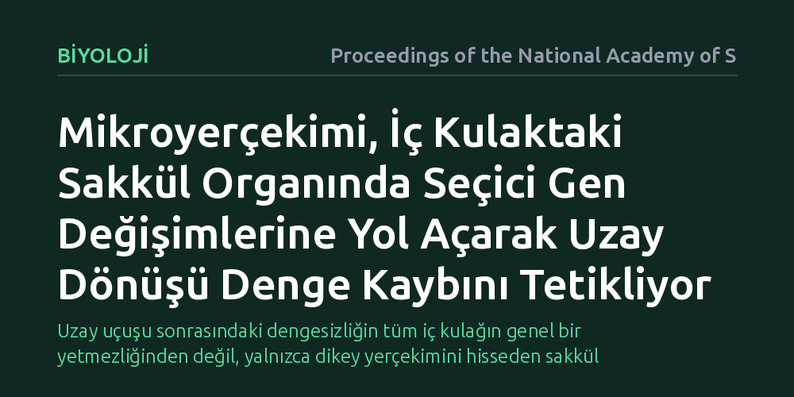

BIYOLOJI · Proceedings of the National Academy of Sciences · 2026-09-08
Araştırmacılar, uzun süreli uzay uçuşlarının ardından astronotlarda ortaya çıkan denge kaybının hücresel ve moleküler nedenlerini inceledi. Mikroyerçekiminin iç kulaktaki denge yapılarından özellikle sakkül organında seçici gen ifadesi değişimlerine yol açarak uyumu bozduğu tespit edildi.
Uzay uçuşu sonrasındaki dengesizliğin tüm iç kulağın genel bir yetmezliğinden değil, yalnızca dikey yerçekimini hisseden sakkül organındaki seçici genetik yeniden yapılanmadan kaynaklandığını gösteriyor.

Dünya'ya dönen astronotların kapsülden çıktıklarında yürümekte güçlük çekmesi, ayakta dururken dengelerini kaybetmeleri ve şiddetli baş dönmesi yaşamaları uzay tıbbında uzun yıllardır bilinen bir olgudur. İnsan beyni, dik duruşunu ve uzaydaki yönelimini iç kulakta bulunan karmaşık bir algılayıcı ağı sayesinde korur. Ancak yerçekiminin ortadan kalktığı uzun süreli uzay görevlerinde bu sistemin nasıl bir biyolojik dönüşüm geçirdiği ve dünyaya dönüşte neden bocaladığı sorusunun hücresel temelleri bugüne kadar tam olarak aydınlatılamamıştı.
Uzay araştırmalarında genellikle denge kaybının beyindeki genel bir algı karışıklığından ve duyusal uyumsuzluktan kaynaklandığı varsayılıyordu. Oysa sorunun doğrudan kulağın derinliklerindeki çevre duyu hücrelerinde mi yoksa merkezi sinir sisteminde mi başladığı bilinmedikçe, astronotları koruyacak etkili tedbirler geliştirmek mümkün olmuyor. Mars yolculukları gibi yıllar sürecek görevlerin planlandığı bir dönemde, yerçekimsizliğin duyu organlarımızın hücresel yapısını nasıl etkilediğini anlamak kritik bir öneme sahiptir.
Araştırmacılar bu gizemi aydınlatmak amacıyla mikroyerçekimine maruz kalan canlıların iç kulak dokularını moleküler düzeyde incelemeye aldı. Fare modellerinden elde edilen denge organları, transkriptomik analiz yöntemleriyle taranarak iç kulaktaki hücrelerin hangi genleri daha aktif kullandığı, hangi protein üretimlerini kıstığı ve sinirsel sinyal iletiminde ne tür yeniden yapılanmaların gerçekleştiği ayrıntılı olarak haritalandı.
Çalışmanın belirleyici aşaması, laboratuvarda elde edilen bu moleküler ipuçlarının gerçek uzay yolcularındaki fizyolojik karşılığını aramak oldu. Uzun süreli uzay istasyonu görevlerinden Dünya'ya dönen astronotlar üzerinde vestibüler refleks testleri ve servikal uyarılmış miyojenik potansiyel ölçümleri gerçekleştirildi. Böylece hücresel düzeyde gözlenen biyolojik gen profili değişimleri ile astronotların sergilediği gerçek denge performansları doğrudan eşleştirildi.
Elde edilen bulgular, yerçekimsizliğin iç kulaktaki tüm yapıları eşit derecede etkilemediğini, aksine son derece seçici bir etki mekanizmasına sahip olduğunu ortaya koydu. Başın dönme hareketlerini algılayan yarım daire kanalları yerçekimsiz ortamda gen ifadesi açısından büyük oranda kararlı kalırken, yerçekimi ve dikey ivmeyi ölçmekle görevli olan sakkül organında belirgin bir genetik yeniden yapılanma meydana geldiği saptandı.
Sakküldeki duyu hücrelerinin yerçekimi yükünün kalkmasıyla birlikte sinaptik iletim ve hücre iskeletiyle ilişkili genlerin ifadesini baskıladığı, adeta ağırlıksız ortama uyum sağlamak için kendini yeniden programladığı belirlendi. Ancak bu biyolojik uyum, yerçekiminin yeniden devreye girdiği Dünya ortamında bir dezavantaja dönüşüyor. Astronotların zeminle temas ettiklerinde yaşadıkları dikey denge kaybının, doğrudan bu organdaki hücresel plastisite ve sinirsel sinyal iletimindeki zayıflamayla örtüştüğü anlaşıldı.
Bu sonuçlar, uzay kaynaklı denge problemlerinde tek tip bir vestibüler bozulmadan söz edilemeyeceğini gösteriyor. Bugüne kadar uygulanan genel hareket antrenmanları ya da ilaç tedavileri yerine, doğrudan dikey ivme algısını ve sakkül işlevini korumaya yönelik hedefe yönelik müdahalelerin tasarlanması gerektiğini ortaya koyuyor. Gelecekte astronotlara uçuş sırasında uygulanacak yapay uyarım protokollerinin bu spesifik organı hedeflemesi mümkün hale gelebilir.
Bulguların değeri yalnızca uzay misyonlarıyla da sınırlı değil. Yeryüzünde uzun süre yatağa bağımlı kalan hastalarda, felç sonrası hareketsiz duran bireylerde veya iç kulak kökenli denge bozukluğu yaşayan kişilerde görülen belirtilerin altında da benzer organ seçici mekanizmalar yatıyor olabilir. Yerçekimi kuvvetinin azalmasıyla tetiklenen bu moleküler dönüşümün dinamiklerini anlamak, klinik vestibüler rehabilitasyon protokolleri için de yeni kapılar aralıyor.